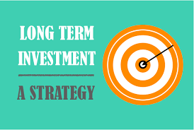

Greatest Long Term Investing Strategy Books for Investing in 2022
The simplest and most reliable way to build a big portfolio return is to use a buy-and-hold strategy. The majority of investors are best served by purchasing and keeping stocks for the long term, but this strategy still offers a lot of latitude in terms of choosing which specific businesses and investment themes to emphasize.
13 of today's most popular investment strategies: the real story.
- 10 important lessons for all investors
- Busting the persistent market myths
- Bonds versus high dividend stocks: which is better and safer?
- Are cheap stocks really that way?
- Should you make a quality purchase? Momentum? The newest trend? What
else?
You have heard them. (Possibly from your broker, too!) They're the
"can't lose" financial tales that assure you of a risk-free route to
success.
- Buy businesses that are trading below book value.
- "Follow the flow."
- "Invest in low P/E equities."
- "Remain true to quality."
- After awful news, "Buy."
- "Buy when there's good news."
- "Suit up for the insiders."
- "Follow Warren Buffett's lead," someone said.
- And it goes on and on.
- They make good sound. But do they actually function? You're going to
learn soon.
In Investment Fables, one of the
top investment researchers in the world analyzes the data for 13 of
the most popular methods now being used, providing unbiased responses
to the queries that your broker is unable to address. Has it been
successful in the long run? In the near future? Does it still make
sense if it formerly made sense? Are the hoped-for benefits only a
statistical illusion? Could it function as a piece of your overall
investing plan? What drawbacks exist, and how can you lessen them?
This book is absolutely essential if you wish to make wiser investment
selections.
Renowned investment advisor
Marc Faber sets out to find
tomorrow s gold the outperforming asset classes of the future. Far
from being a sensational reading of the runes, this book delves deep
into the past, to chart how old investor trends developed and assess
how new patterns might emerge. Change is the thread. As Faber points
out, the world is experiencing a transformation as great as Europe s
late-15th Century golden age of discovery and the Industrial
Revolution of the19th Century events that altered the commercial face
of the Earth forever.
Faber also locates investment opportunities
from this dramatic backdrop in a
world where social, political, and economic situations are changing at
an alarming rate.
Asia's population of three billion people will have a significant
impact on the world, warns Faber,
adding that it is improbable that the world's richest cities and
wealthiest regions would continue to hold their enviable positions in
the future.
The era of buying and holding stocks is gone -- and will not return for some time. Now is the time to learn to target where the market is going to be, not where it has been, so you can invest successfully. Financial expert John Mauldin makes a powerful, almost irrefutable case regarding the future direction of the markets. He then details a new approach to investing that will allow you to adjust to the new reality of investing. You'll consider options beyond traditional stock portfolios as you learn to choose between the stable and secure investments that will enable you to profit in turbulent markets. Buy your copy of this must-read investment roadmap today.